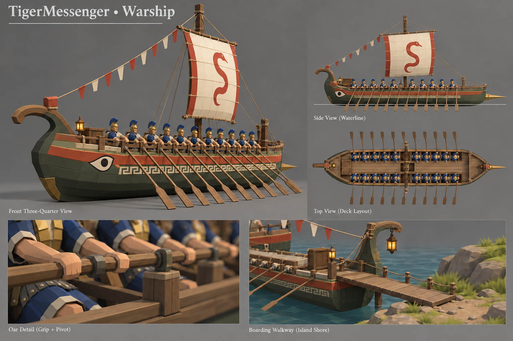
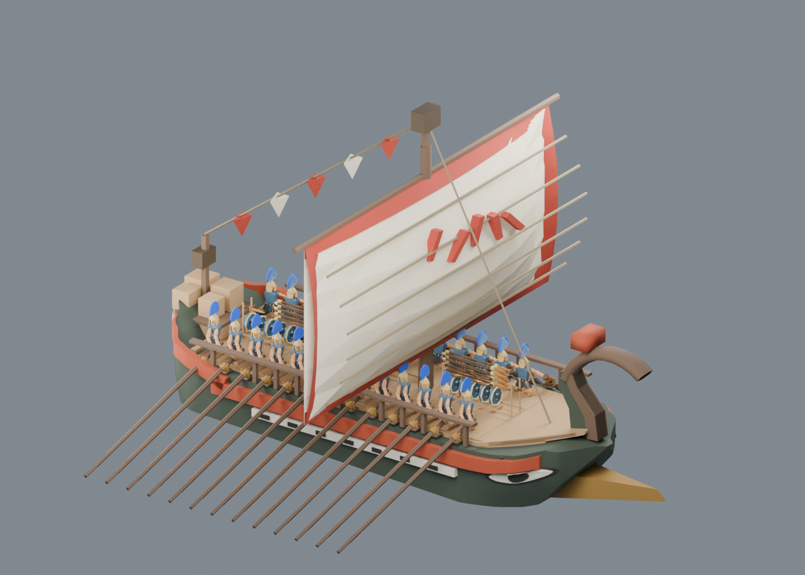
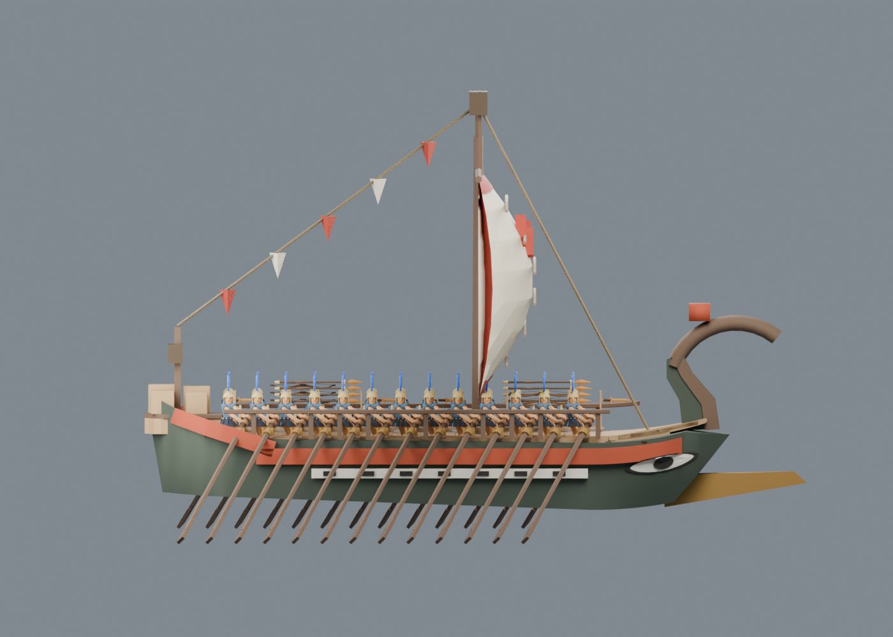
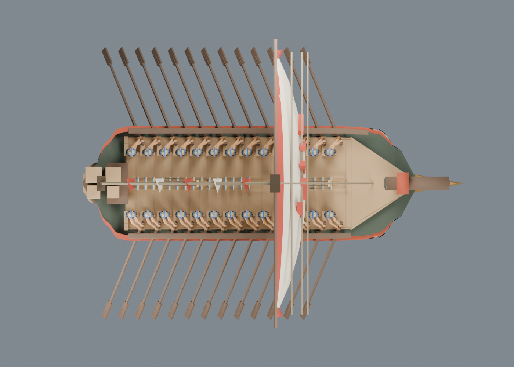
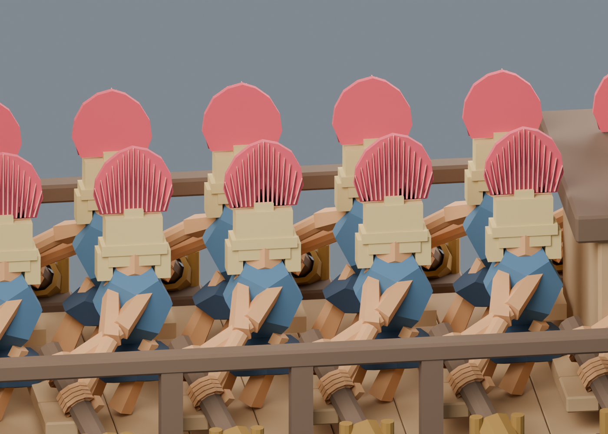
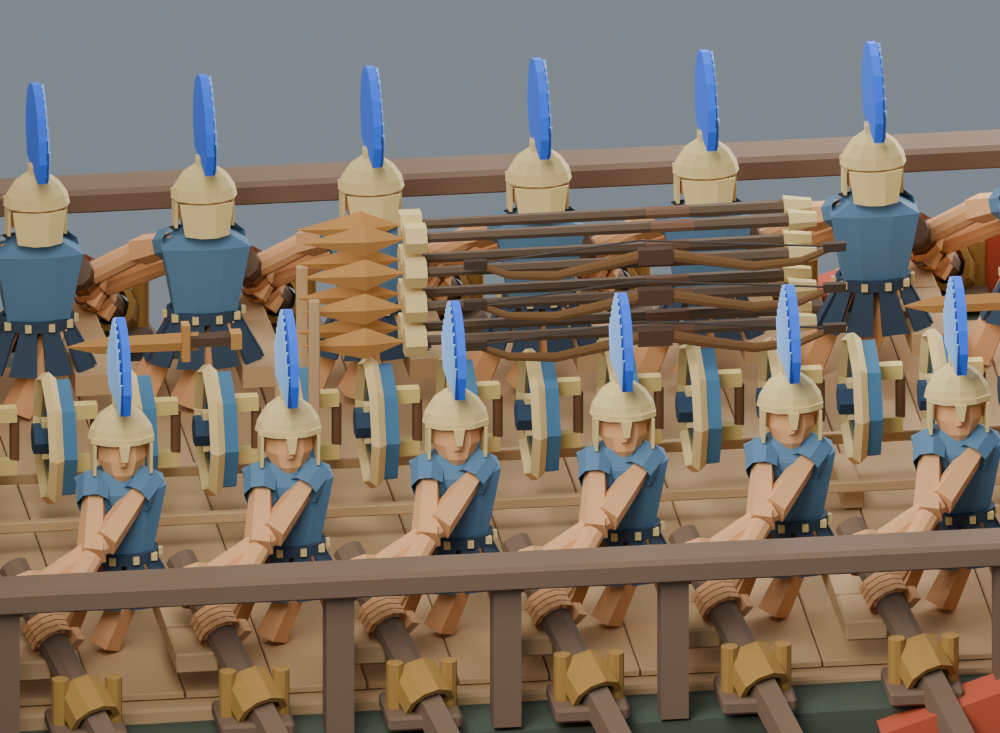

后续：三兵种离座／取械检查与水平跳板候选
传统战船 · 同一拨士兵、中央收纳与过道
复用已优化的罗马士兵脸型、头盔、胸甲和分片裙甲；武器航行时归对应士兵所有、存放船中。原26桨位保留，25名战斗兵上岸，第26人留守。
这是模型与人物归属迭代。船内完整取械步行、跳板展开、接岸和浅水航道仍未验收，不能把姿态显隐切换叫作完整登船动画。
目标图：眼睛已统一

侧视眼睛移到弯艏柱同端，和主透视对应。俯视图用于两侧坐席与通行空间。查阅参考来源与游戏取舍
最新 Blender 回读 · v11


船壳连续上扬的弯艏柱，眼睛与船头同端。
人体不拉伸，两侧整体外移；中央低窄武器收纳分段，船尾货物避开后排坐席。
旧桨手
认可士兵几何适配坐姿后本轮船头与来源记录 · 301帧握点与净宽 · 兵器、士兵和货台穿插采样
最新实际航程：50 人同身份、武器去返 10 项通过